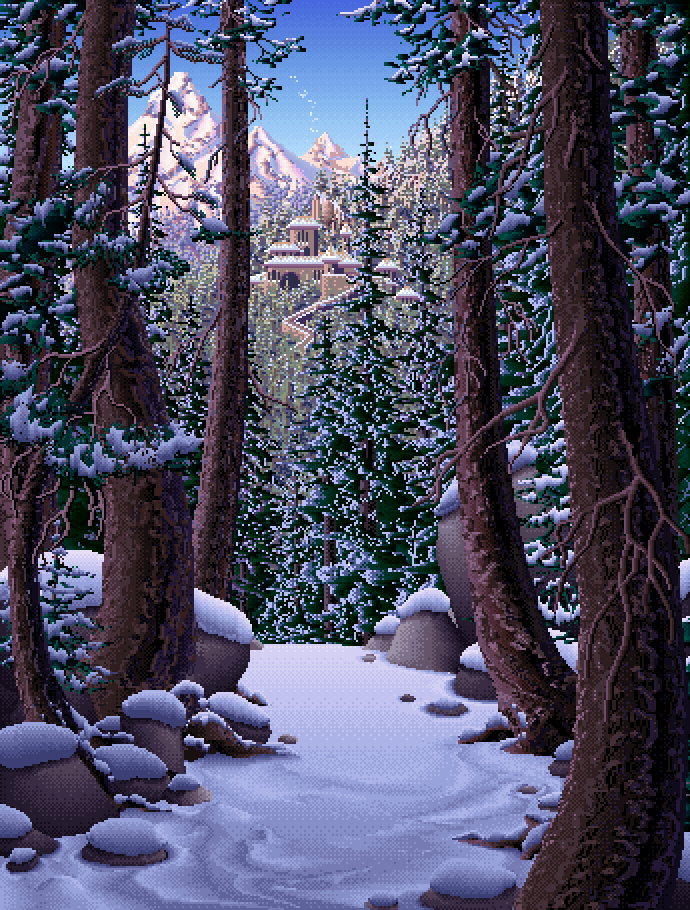

This new Living Worlds app is a modern recreation of a set of dynamic pixel art scenes first published in the early 90s as part of an "illustrated personal organizer" named Seize the Day, and seen as screenshots across the Internet since then. These scenes were created by Mark Ferrari, legendary artist from such classic games as Loom and The Secret of Monkey Island as well as the recent Thimbleweed Park. Now, 25 years later, Ian Gilman, the original software developer, has resurrected the Living Worlds, with Mark's support and additional code from Joseph Huckaby. There may be copycats, but this is the only authentic version from the original creators!
This release of the app contains all twelve of the original scenes in their full glory. The sun rises and falls in real time, storms pass through, flowers bloom, the moon and stars cross the sky. Smaller details like chimney smoke and animal footprints come and go. The image "lives" throughout the day, drawing you in, suggesting stories, and rewarding quiet observation.
The Android version also works as a live wallpaper (the iOS version does not, due to Apple restrictions).
Join us for this 25th anniversary celebration of these unique artworks!
Learn more about the history and technology of this project.
Sign up for our email list or follow us on Twitter, Instagram, TikTok, or Facebook.